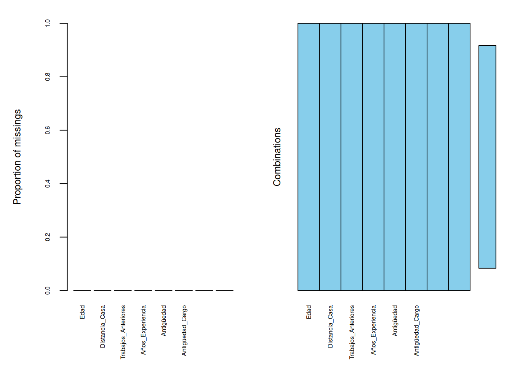
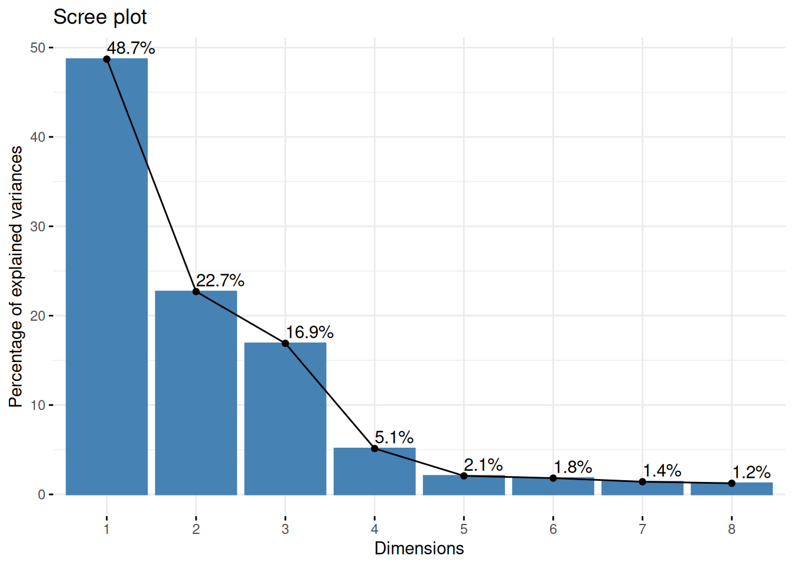
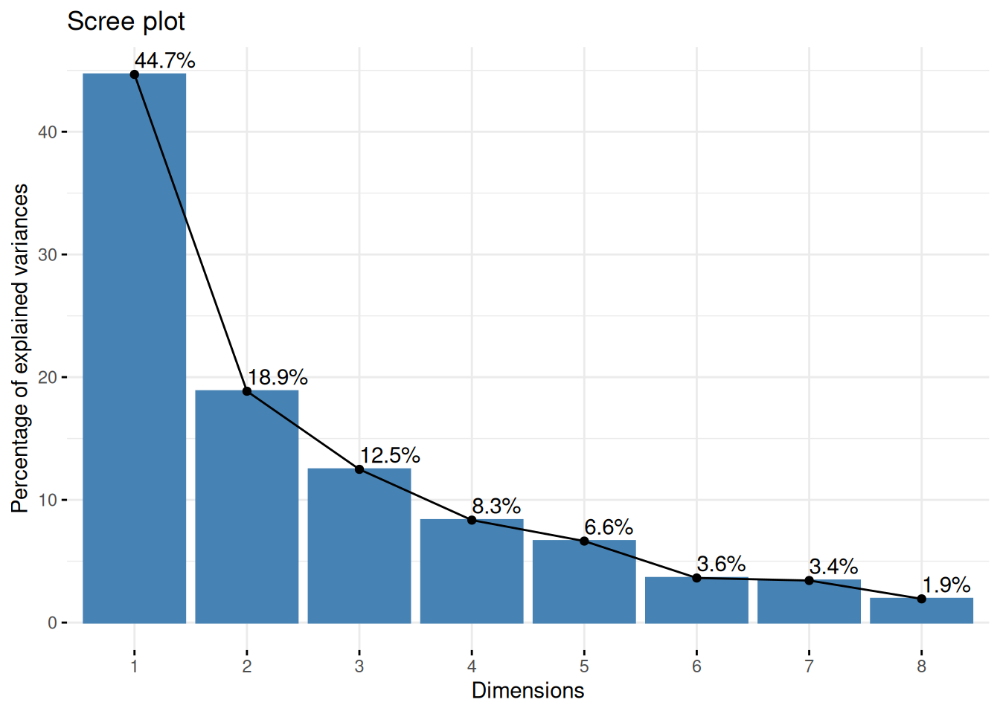
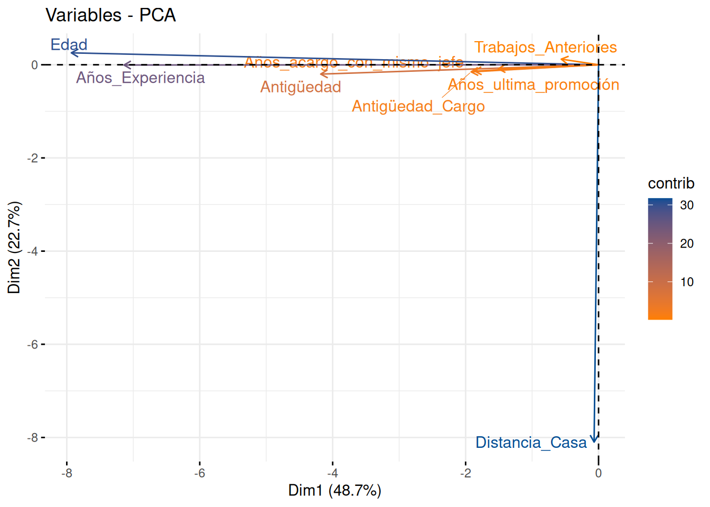
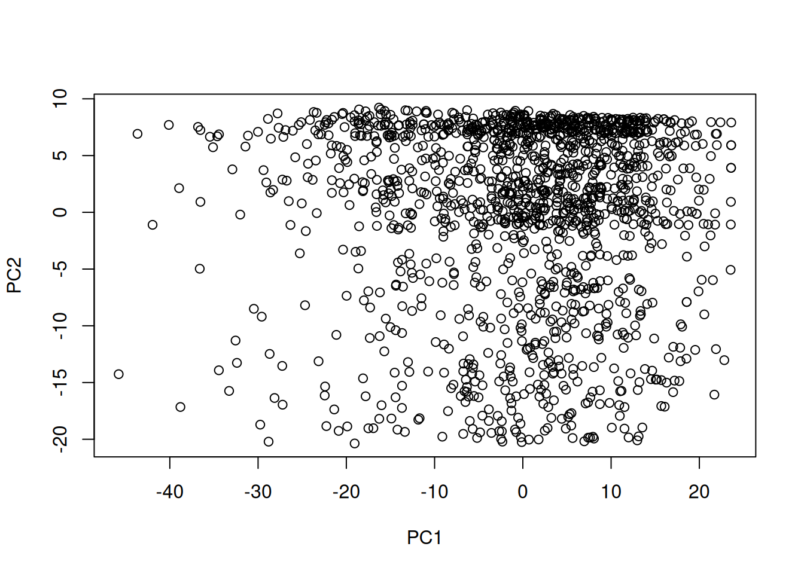
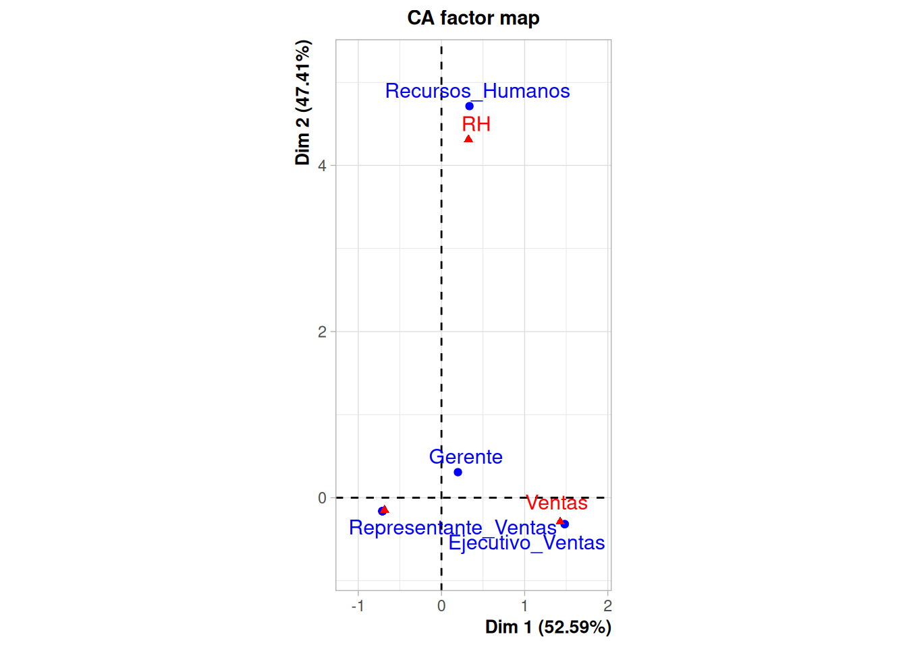

Objetivo : Reducción de dimensión de la base de datos (reducir variables). Pasar de m variables a 2 o 3 variables independientes llamadas componentes sin perder información.
Este proceso genera nuevas variables como una combinación lineal de las variables originales. Para la construcción de estos componentes se parte de la matriz de varianzas-covarianzas, que en su diagonal concentra las varianza de todas las variables incluidas en el analisis. La suma de estas varianzas conforman la variacion total de la data.
El primer componente captura la mayor parte de esta variación total, el segundo una menor parte y así sucesivamente hasta el último componente. Por lo general los dos primeros componentes captran un gran porcentaje de la variación total (80% o mas).
De esta forma se pueden graficar los observaciones (filas) en un plano carteciano (2D). Si se puede dar nombre a los ejes (CP1 y CP2) teniendo en cuenta los mayores pesos de las variables, el análisis permitirá explicar y analizar esta transformación.
library(paqueteMODELOS)
data("rotacion")
str(rotacion)tibble [1,470 × 24] (S3: tbl_df/tbl/data.frame)
$ Rotación : chr [1:1470] "Si" "No" "Si" "No" ...
$ Edad : num [1:1470] 41 49 37 33 27 32 59 30 38 36 ...
$ Viaje de Negocios : chr [1:1470] "Raramente" "Frecuentemente" "Raramente" "Frecuentemente" ...
$ Departamento : chr [1:1470] "Ventas" "IyD" "IyD" "IyD" ...
$ Distancia_Casa : num [1:1470] 1 8 2 3 2 2 3 24 23 27 ...
$ Educación : num [1:1470] 2 1 2 4 1 2 3 1 3 3 ...
$ Campo_Educación : chr [1:1470] "Ciencias" "Ciencias" "Otra" "Ciencias" ...
$ Satisfacción_Ambiental : num [1:1470] 2 3 4 4 1 4 3 4 4 3 ...
$ Genero : chr [1:1470] "F" "M" "M" "F" ...
$ Cargo : chr [1:1470] "Ejecutivo_Ventas" "Investigador_Cientifico" "Tecnico_Laboratorio" "Investigador_Cientifico" ...
$ Satisfación_Laboral : num [1:1470] 4 2 3 3 2 4 1 3 3 3 ...
$ Estado_Civil : chr [1:1470] "Soltero" "Casado" "Soltero" "Casado" ...
$ Ingreso_Mensual : num [1:1470] 5993 5130 2090 2909 3468 ...
$ Trabajos_Anteriores : num [1:1470] 8 1 6 1 9 0 4 1 0 6 ...
$ Horas_Extra : chr [1:1470] "Si" "No" "Si" "Si" ...
$ Porcentaje_aumento_salarial: num [1:1470] 11 23 15 11 12 13 20 22 21 13 ...
$ Rendimiento_Laboral : num [1:1470] 3 4 3 3 3 3 4 4 4 3 ...
$ Años_Experiencia : num [1:1470] 8 10 7 8 6 8 12 1 10 17 ...
$ Capacitaciones : num [1:1470] 0 3 3 3 3 2 3 2 2 3 ...
$ Equilibrio_Trabajo_Vida : num [1:1470] 1 3 3 3 3 2 2 3 3 2 ...
$ Antigüedad : num [1:1470] 6 10 0 8 2 7 1 1 9 7 ...
$ Antigüedad_Cargo : num [1:1470] 4 7 0 7 2 7 0 0 7 7 ...
$ Años_ultima_promoción : num [1:1470] 0 1 0 3 2 3 0 0 1 7 ...
$ Años_acargo_con_mismo_jefe : num [1:1470] 5 7 0 0 2 6 0 0 8 7 ...rotacion1 <-rotacion[,c(2,5,14,18,21,22,23,24)]
str(rotacion1)tibble [1,470 × 8] (S3: tbl_df/tbl/data.frame)
$ Edad : num [1:1470] 41 49 37 33 27 32 59 30 38 36 ...
$ Distancia_Casa : num [1:1470] 1 8 2 3 2 2 3 24 23 27 ...
$ Trabajos_Anteriores : num [1:1470] 8 1 6 1 9 0 4 1 0 6 ...
$ Años_Experiencia : num [1:1470] 8 10 7 8 6 8 12 1 10 17 ...
$ Antigüedad : num [1:1470] 6 10 0 8 2 7 1 1 9 7 ...
$ Antigüedad_Cargo : num [1:1470] 4 7 0 7 2 7 0 0 7 7 ...
$ Años_ultima_promoción : num [1:1470] 0 1 0 3 2 3 0 0 1 7 ...
$ Años_acargo_con_mismo_jefe: num [1:1470] 5 7 0 0 2 6 0 0 8 7 ...# install.packages("VIM")
VIM::aggr(rotacion1, cex.axis = 0.5, cex.lab= 0.8) # graficos de datos faltantes
library(factoextra)
res.pca <- prcomp(rotacion1)
fviz_eig(res.pca, addlabels = TRUE)
library(factoextra)
rotacionZ <- scale(rotacion1)
res.pcaZ <- prcomp(rotacionZ)
fviz_eig(res.pcaZ, addlabels = TRUE)
fviz_pca_var(res.pca,
col.var = "contrib", # Color by contributions to the PC
gradient.cols = c("#FF7F00", "#034D94"),
repel = TRUE # Avoid text overlapping
)
summary(res.pca)Importance of components:
PC1 PC2 PC3 PC4 PC5 PC6 PC7
Standard deviation 11.8798 8.1096 6.9978 3.85655 2.45137 2.29795 2.02692
Proportion of Variance 0.4871 0.2270 0.1690 0.05133 0.02074 0.01822 0.01418
Cumulative Proportion 0.4871 0.7141 0.8831 0.93440 0.95514 0.97336 0.98754
PC8
Standard deviation 1.89976
Proportion of Variance 0.01246
Cumulative Proportion 1.00000plot(res.pca$x)
library(FactoMineR)
t =table(rotacion$Cargo, rotacion$Departamento)
t
IyD RH Ventas
Director_Investigación 80 0 0
Director_Manofactura 145 0 0
Ejecutivo_Ventas 0 0 326
Gerente 54 11 37
Investigador_Cientifico 292 0 0
Recursos_Humanos 0 52 0
Representante_Salud 131 0 0
Representante_Ventas 0 0 83
Tecnico_Laboratorio 259 0 0chisq.testfunction (x, y = NULL, correct = TRUE, p = rep(1/length(x), length(x)),
rescale.p = FALSE, simulate.p.value = FALSE, B = 2000)
{
DNAME <- deparse(substitute(x))
if (is.data.frame(x))
x <- as.matrix(x)
if (is.matrix(x)) {
if (min(dim(x)) == 1L)
x <- as.vector(x)
}
if (!is.matrix(x) && !is.null(y)) {
if (length(x) != length(y))
stop("'x' and 'y' must have the same length")
DNAME2 <- deparse(substitute(y))
xname <- if (length(DNAME) > 1L || nchar(DNAME, "w") >
30)
""
else DNAME
yname <- if (length(DNAME2) > 1L || nchar(DNAME2, "w") >
30)
""
else DNAME2
OK <- complete.cases(x, y)
x <- factor(x[OK])
y <- factor(y[OK])
if ((nlevels(x) < 2L) || (nlevels(y) < 2L))
stop("'x' and 'y' must have at least 2 levels")
x <- table(x, y)
names(dimnames(x)) <- c(xname, yname)
DNAME <- paste(paste(DNAME, collapse = "\n"), "and",
paste(DNAME2, collapse = "\n"))
}
if (any(x < 0) || anyNA(x))
stop("all entries of 'x' must be nonnegative and finite")
if ((n <- sum(x)) == 0)
stop("at least one entry of 'x' must be positive")
if (simulate.p.value) {
setMETH <- function() METHOD <<- paste(METHOD, "with simulated p-value\n\t (based on",
B, "replicates)")
almost.1 <- 1 - 64 * .Machine$double.eps
}
if (is.matrix(x)) {
METHOD <- "Pearson's Chi-squared test"
nr <- as.integer(nrow(x))
nc <- as.integer(ncol(x))
if (is.na(nr) || is.na(nc) || is.na(nr * nc))
stop("invalid nrow(x) or ncol(x)", domain = NA)
sr <- rowSums(x)
sc <- colSums(x)
E <- outer(sr, sc)/n
v <- function(r, c, n) c * r * (n - r) * (n - c)/n^3
V <- outer(sr, sc, v, n)
dimnames(E) <- dimnames(x)
if (simulate.p.value && all(sr > 0) && all(sc > 0)) {
setMETH()
tmp <- .Call(C_chisq_sim, sr, sc, B, E)
STATISTIC <- sum(sort((x - E)^2/E, decreasing = TRUE))
PARAMETER <- NA
PVAL <- (1 + sum(tmp >= almost.1 * STATISTIC))/(B +
1)
}
else {
if (simulate.p.value)
warning("cannot compute simulated p-value with zero marginals")
if (correct && nrow(x) == 2L && ncol(x) == 2L) {
YATES <- min(0.5, abs(x - E))
if (YATES > 0)
METHOD <- paste(METHOD, "with Yates' continuity correction")
}
else YATES <- 0
STATISTIC <- sum((abs(x - E) - YATES)^2/E)
PARAMETER <- (nr - 1L) * (nc - 1L)
PVAL <- pchisq(STATISTIC, PARAMETER, lower.tail = FALSE)
}
}
else {
if (length(dim(x)) > 2L)
stop("invalid 'x'")
if (length(x) == 1L)
stop("'x' must at least have 2 elements")
if (length(x) != length(p))
stop("'x' and 'p' must have the same number of elements")
if (any(p < 0))
stop("probabilities must be non-negative.")
if (abs(sum(p) - 1) > sqrt(.Machine$double.eps)) {
if (rescale.p)
p <- p/sum(p)
else stop("probabilities must sum to 1.")
}
METHOD <- "Chi-squared test for given probabilities"
E <- n * p
V <- n * p * (1 - p)
STATISTIC <- sum((x - E)^2/E)
names(E) <- names(x)
if (simulate.p.value) {
setMETH()
nx <- length(x)
sm <- matrix(sample.int(nx, B * n, TRUE, prob = p),
nrow = n)
ss <- apply(sm, 2L, function(x, E, k) {
sum((table(factor(x, levels = 1L:k)) - E)^2/E)
}, E = E, k = nx)
PARAMETER <- NA
PVAL <- (1 + sum(ss >= almost.1 * STATISTIC))/(B +
1)
}
else {
PARAMETER <- length(x) - 1
PVAL <- pchisq(STATISTIC, PARAMETER, lower.tail = FALSE)
}
}
names(STATISTIC) <- "X-squared"
names(PARAMETER) <- "df"
if (any(E < 5) && is.finite(PARAMETER))
warning("Chi-squared approximation may be incorrect")
structure(list(statistic = STATISTIC, parameter = PARAMETER,
p.value = PVAL, method = METHOD, data.name = DNAME, observed = x,
expected = E, residuals = (x - E)/sqrt(E), stdres = (x -
E)/sqrt(V)), class = "htest")
}
<bytecode: 0x5633ae229a58>
<environment: namespace:stats>library(factoextra)
library(gridExtra)
resultados_ac <- CA(t)Warning: ggrepel: 6 unlabeled data points (too many overlaps). Consider
increasing max.overlaps
```